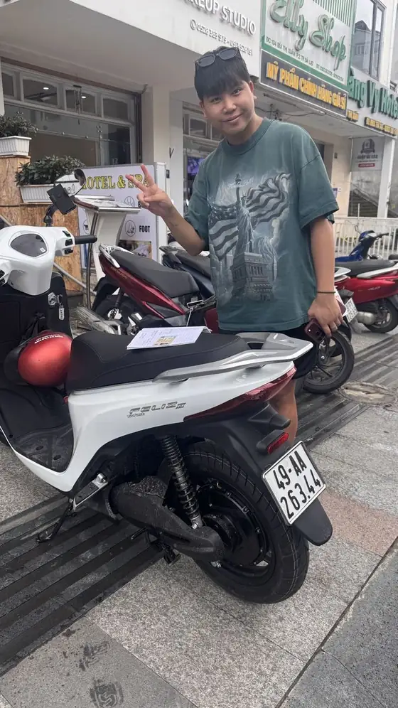

Kenapa skuter elektrik sesuai untuk pemula
- Tiada gear, tiada klac: anda hanya guna pendikit dan dua brek.
- Senyap dan lancar: tiada gegaran enjin, jadi lebih mudah mendengar trafik dan kekal tenang.
- Ringan: mudah ditolak, diletakkan dan dipusingkan apabila tersalah jalan.
- Tak perlu isi minyak: satu bateri boleh digunakan kira-kira 25–30 km; setiap skuter ada 2 bateri, jumlah kira-kira 50–60 km — lebih daripada cukup untuk sehari di bandar.
Kawalan dalam satu minit
- Pemegang kanan: pendikit. Pulas perlahan — motor elektrik terus bergerak, tanpa kelewatan singkat seperti skuter petrol.
- Tuil kanan: brek depan. Tuil kiri: brek belakang. Guna kedua-duanya serentak dengan lembut.
- Hidupkan skuter dengan kunci, jauhkan tangan daripada pendikit sehingga kedua-dua kaki bersedia, kemudian bergerak perlahan.
- Lampu, lampu isyarat dan hon ada pada hendal — kami tunjukkan setiap satu sebelum anda bertolak.
Tunggangan pertama anda, langkah demi langkah
- Di kedai, kami terangkan cara guna skuter, kemudian anda cuba tunggang sebentar di depan kedai sambil kami perhatikan.
- Kita rakam video keadaan skuter bersama-sama sebelum anda bertolak.
- Mulakan di jalan rata dan lengang pada waktu pagi, ketika trafik masih kurang.
- Berlatih bergerak, berhenti dan membelok perlahan sehingga terasa biasa — sepuluh minit selalunya cukup.
- Barulah tunggang ke arah Tasik Xuan Huong dan pusat bandar yang lebih sibuk.

Bukit: perkara utama yang pemula perlu tahu
Dalat dibina di atas bukit, malah di pusat bandar sekalipun. Ketika mendaki, kekalkan pendikit dengan stabil. Ketika menurun, lepaskan pendikit awal dan brek dengan lembut menggunakan kedua-dua brek, perlahankan sebelum selekoh dan bukan di dalam selekoh. Laluan panjang dan curam seperti Prenn, Mimosa dan jalan naik ke Lang Biang tidak sesuai untuk skuter elektrik — dan juga bukan untuk tunggangan pertama. Untuk perjalanan itu kemudian, pilih Honda Air Blade 125cc pada harga yang sama.
Tip trafik untuk penunggang kali pertama
- Vietnam memandu di sebelah kanan (berbeza dengan Malaysia). Kekal di sebelah kanan lorong dan biarkan motosikal yang lebih laju memotong.
- Bunyi hon biasanya bermaksud "saya ada di sini", bukan marah — kekal tenang dan tunggang dalam garisan yang stabil.
- Perlahankan di bulatan dan persimpangan dan lihat sekeliling, walaupun lampu hijau.
- Elakkan pergerakan mengejut; tunggangan yang boleh dijangka membuatkan anda selamat.
- Jangan bawa pembonceng sehingga anda benar-benar yakin. Hadnya 2 orang dengan jumlah berat di bawah 140 kg.
- Tiada alkohol atau bir semasa menunggang, dan patuhi undang-undang jalan raya Vietnam dengan ketat.
- Guna pemegang telefon untuk Google Maps — jangan sekali-kali memegang telefon semasa menunggang.
Semua syarat disenaraikan dalam peraturan sewa skuter elektrik kami, dan nasihat praktikal lain ada dalam tip sewa skuter elektrik di Dalat.
Laluan pertama yang sesuai untuk pemula
- Pusingan perlahan mengelilingi Tasik Xuan Huong.
- Taman bunga dan jalan-jalan di sebelah utara tasik.
- Stesen Kereta Api Da Lat, kemudian kembali ke pusat bandar untuk minum kopi.
Pastikan tunggangan pendek, letak skuter di tempat letak kenderaan berjaga (gửi xe) dan pulang apabila bateri tinggal kira-kira satu pertiga. Tukar bateri di kedai kami berharga 20,000 VND.
Sewa skuter elektrik untuk pemula di Dalat
150,000 VND sehari, topi keledar percuma, pemegang telefon dan tanpa deposit wang tunai — anda hanya tinggalkan pasport atau kad pengenalan. Lihat skuter di halaman sewa skuter elektrik kami atau bandingkan semua motosikal di halaman sewa motosikal Da Lat.
Ada soalan tentang Da Lat?
Kami boleh bantu tentang laluan, cuaca dan tempahan motosikal — hantar mesej melalui WhatsApp.
Mesej di WhatsAppSewa motosikal di Da Lat
Honda Vision, Honda Air Blade 125cc dan skuter elektrik — 150,000 VND sehari, tiada deposit wang, topi keledar percuma, hantar ke hotel untuk sewaan 2 hari ke atas.